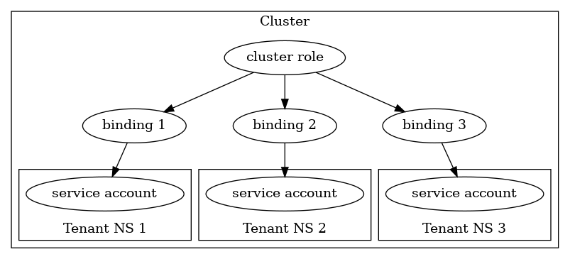
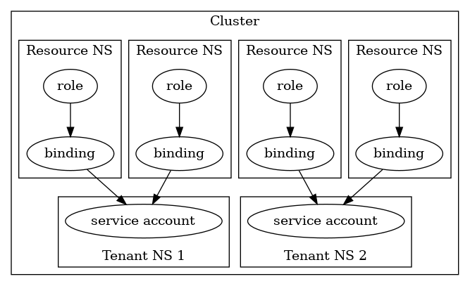

Deploying Azure Service Operator v2 in multi-tenant mode #
The current release version of the Azure Service Operator (ASO) deployment YAML installs the operator in single-tenant mode:
deployed in the azureserviceoperator-system namespace with a single set of Azure credentials,
and manages resources in any namespace in the cluster.
That single operator deployment handles webhooks fired when Azure resources are changed.
ASO may also be deployed in a multi-tenant configuration, enabling the use of separate credentials for managing resources in different Kubernetes namespaces.
Running the operator in multi-tenant mode requires one deployment to handle webhooks (required because webhook configurations are cluster-level resources) and then a separate deployment for each tenant, each with its own credentials and set of namespaces that it watches for Azure resources.
To deploy the operator in multi-tenant mode the release YAML has been split into two parts:
-
Cluster-wide resources:
-
Custom resource definitions for the Azure resources.
-
Cluster roles for managing those resources.
-
The
azureserviceoperator-systemnamespace containing the deployment and service to handle ASO webhooks. The webhook service is a deployment of the ASO image, but configured to run in webhook-only mode. It won’t try to reconcile Azure resources with ARM, and so doesn’t need any Azure credentials. -
Webhook configuration referring to that service.
-
-
Per-tenant resources:
-
A namespace containing the deployment to run the tenant operator, configured for watchers-only mode.
-
The
aso-controller-settingssecret defining the Azure credentials that should be used, and the set of namespaces that this operator will watch for Azure resources. -
A cluster role binding enabling the per-tenant operator’s service account to manage the Azure resources.
-
Example files #
Examples of the deployment YAML files are available on the release page for ASO v2 releases from v2.0.0-alpha.6.
The cluster-wide file multitenant-cluster_v2.0.0-alpha.6.yaml can be used as-is (the webhook deployment namespace is fixed as azureserviceoperator-system),
but the namespaces and cluster role binding in the per-tenant file multitenant-tenant_v2.0.0-alpha.6.yaml will need to be customised in each tenant’s YAML file from tenant1 to the desired name for that tenant.
Per-tenant configuration #
Create the aso-controller-settings secret as described in the authentication docs,
but create the secret in the tenant namespace and add an extra target namespaces key to it:
export TENANT_NAMESPACE="<tenant namespace>"
export AZURE_SUBSCRIPTION_ID="<subscription id>"
export AZURE_TENANT_ID="<tenant id>"
export AZURE_CLIENT_ID="<client id>"
export AZURE_CLIENT_SECRET="<client secret>"
export AZURE_TARGET_NAMESPACES="<comma-separated namespace names>"
kubectl create namespace "$TENANT_NAMESPACE"
cat <<EOF | kubectl apply -f -
apiVersion: v1
kind: Secret
metadata:
name: aso-controller-settings
namespace: $TENANT_NAMESPACE
stringData:
AZURE_SUBSCRIPTION_ID: "$AZURE_SUBSCRIPTION_ID"
AZURE_TENANT_ID: "$AZURE_TENANT_ID"
AZURE_CLIENT_ID: "$AZURE_CLIENT_ID"
AZURE_CLIENT_SECRET: "$AZURE_CLIENT_SECRET"
AZURE_TARGET_NAMESPACES: "$AZURE_TARGET_NAMESPACES"
EOF
Once the tenant operator is deployed and configured the contents of the tenant namespace will look something like the following:
$ kubectl get pods,replicasets,deployments,serviceaccounts,secrets -n tenant1-system
NAME READY STATUS RESTARTS AGE
pod/azureserviceoperator-controller-manager-657948696b-dzfmw 1/1 Running 3 3d
NAME DESIRED CURRENT READY AGE
replicaset.apps/azureserviceoperator-controller-manager-657948696b 1 1 1 3d
NAME READY UP-TO-DATE AVAILABLE AGE
deployment.apps/azureserviceoperator-controller-manager 1/1 1 1 3d
NAME SECRETS AGE
serviceaccount/default 1 3d
NAME TYPE DATA AGE
secret/aso-controller-settings Opaque 5 3d
secret/default-token-mqmpb kubernetes.io/service-account-token 3 3d
Role handling #
The multi-tenant deployment example files have a single ClusterRole that grants access to the Azure resource types,
and then a binding to that ClusterRole for the service account in each tenant-operator namespace.
Each ClusterRoleBinding is named for the specific tenant so they don’t collide and can be managed separately:

This is convenient since there’s no need to permit access for Azure resources in each of the target namespaces individually,
but it means that the only thing preventing one tenant operator from reading another’s resources is the AZURE_TARGET_NAMESPACES setting for each operator.
For some usage scenarios that might be too permissive.
In those cases the azureserviceoperator-manager-role should be changed from a ClusterRole into Roles in each of the target namespaces (where the Azure resources will be created, rather than where the tenant-operator pods run),
and a RoleBinding should be created in that namespace linking the Role to the service account for the tenant operator that will be managing Azure resources in this target namespace:

Upgrading #
When upgrading to a newer version of ASO the cluster-wide resources (CRDs, cluster roles) and the webhook deployment must be upgraded before upgrading the tenant operators.
Applying the new version of the multitenant-cluster YAML file will add new and updated CRDs, then update the webhook configuration and cluster roles.
After that the new version of the multitenant-tenant YAML files (customised for the specific tenant names) can be applied.